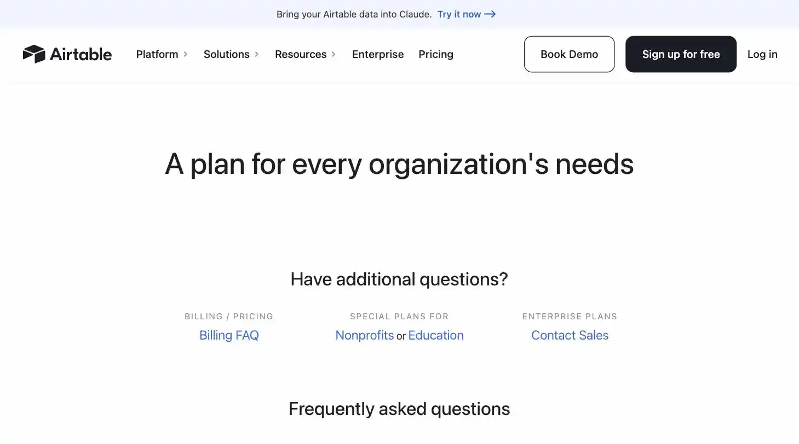
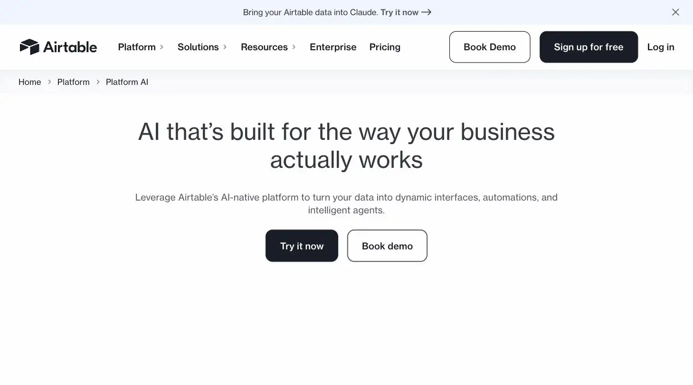

Airtable
He'd never paid a gold coin for storage in his life, and intended to keep it that way.
Airtable is a spreadsheet-database hybrid with AI credits for generating interfaces and automations from your own data. Best for solopreneurs who need something more structured than a spreadsheet but don't need a dedicated CRM or project tool. Priced free (1,000 records/base, 500 AI credits/editor) up to $20-$54/editor/month, the site's verdict is stay on Free as long as possible, it genuinely covers most solo use cases, and only upgrade once you hit the record cap.
Airtable is what happens when a spreadsheet and a database have a baby, and the baby turns out to be good at both. The free plan is generous enough that most solopreneurs will forget it isn't free forever.
- Value for price7.5/10
- Capability8.5/10
- Ease of use6.5/10
- Trial safety8.5/10

Airtable looks like a spreadsheet but behaves like a database, letting you link records across tables and build different views of the same data, which matters most for solopreneurs tracking clients, inventory, or content pipelines that a flat spreadsheet handles poorly.

Airtable's AI layer works directly against your own structured data, your bases and records, generating interfaces and automations from what's already there, rather than a generic chatbot with no context on your business.
Example from airtable.com. Not independently tested by Solos Gems.Pricing breakdown
- Free: 5 editors, 1,000 records/base, unlimited bases, 1GB attachments/base, 500 AI credits/editor/month
- Team: $20/editor/month billed annually ($24/month billed monthly); 50,000 records/base, 25,000 automation runs, 20GB attachments, 15,000 AI credits/collaborator
- Business: $45/editor/month billed annually ($54/month billed monthly); 125,000 records/base, 100,000 automation runs, 100GB attachments, 20,000 AI credits/user
- Enterprise Scale: custom pricing; adds governance and administration for larger organizations
When Free actually runs out
Airtable's Free plan is more generous than most "free" tiers on this list: unlimited bases, 1,000 records per base, and a real AI credit allowance. Most solo operators won't hit the record cap for a long time, a client tracker or content calendar rarely needs more than a few hundred rows. The upgrade to Team makes sense once a specific base is genuinely outgrowing 1,000 records or you're burning through your 500 monthly AI credits doing real automation work, not as a default first move.
Pros
- Free plan is genuinely usable long-term for a solo operator, not just a crippled trial
- Flexible enough to replace a spreadsheet, a lightweight CRM, and a project tracker at once
- Learning curve pays off once you build views and automations tailored to your workflow
Cons
- Ease of use lags behind a plain spreadsheet at first, expect a real setup investment
- Per-editor pricing on Team and Business tiers adds up fast if you add collaborators
- AI credits are shared and limited even on paid tiers, heavy AI use can hit a ceiling
See how this compares to ClickUp Brain →
Common questions
Is Airtable's free plan enough to start with?
Yes for most solo use. The free plan covers the core database-and-view functionality that most one-person operations actually need, records, custom views, and basic automations. You'll only feel the pinch once you hit the record cap or want more than a light amount of AI credits.
When does Airtable stop making sense for a solo user?
Once you're paying per editor just for yourself and features you're not using. Team and Business tiers price per editor, which adds up fast even solo if you add even one collaborator. If your workflow is closer to a simple list than a real relational database, a plain spreadsheet is still cheaper.
Does Airtable's AI actually save time, or is it a gimmick?
It's real but rationed. AI credits are shared across a workspace and limited even on paid tiers, so heavy AI use like bulk field generation or summarization can hit a ceiling faster than the sticker price suggests. Budget for it as a bonus feature, not the reason to buy Airtable.